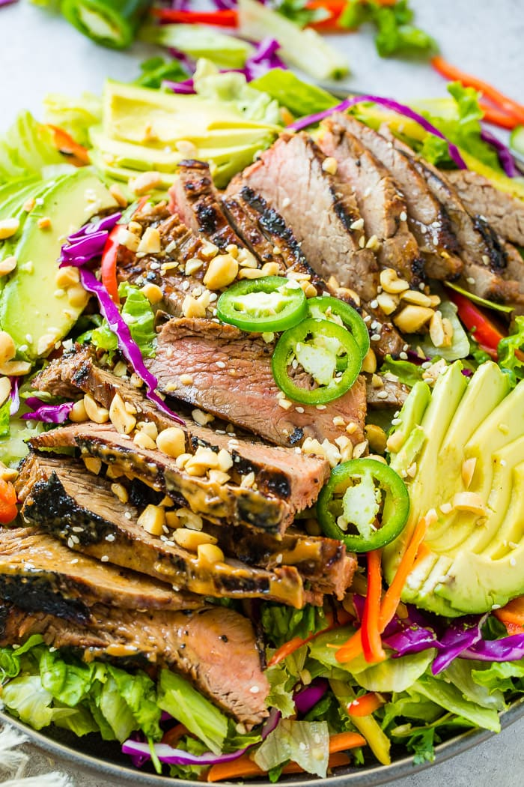
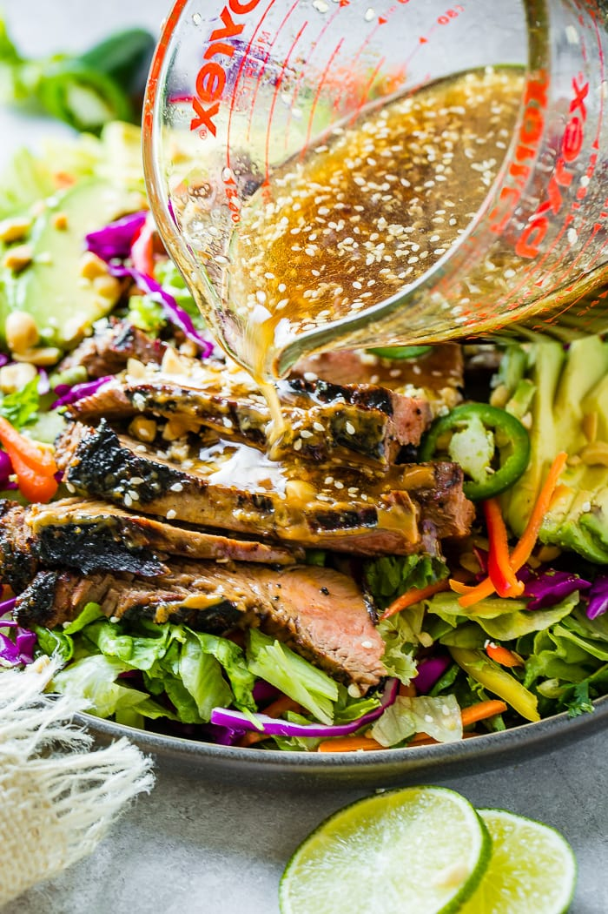
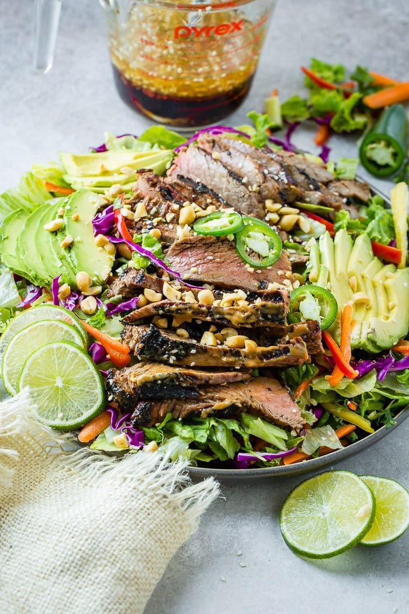
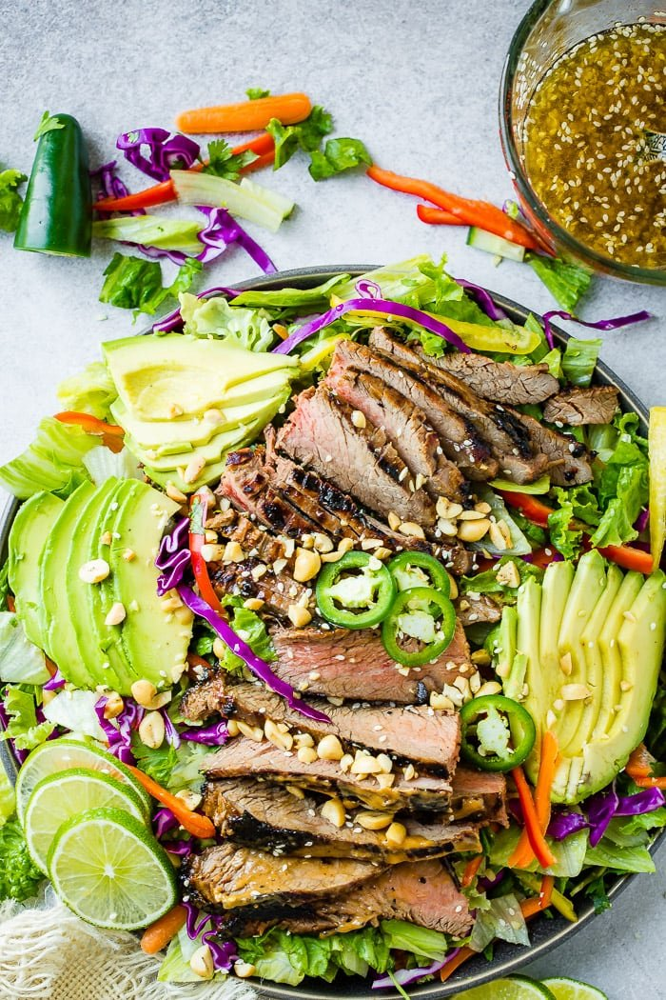
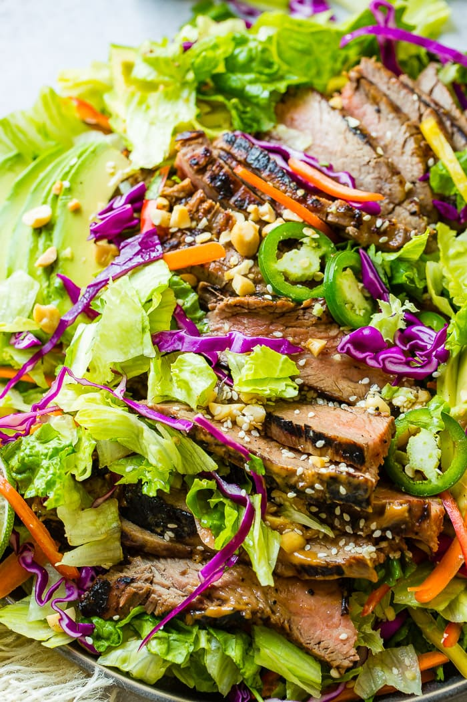

Thai Peanut Steak Salad
Prep Time:1 hour 15 mins
Cook Time:15 mins
Total Time: 1 hour 30 mins
Yield: 6 servings
Ingredients
Thai Peanut Sauce
Ginger Dressing
Steps
- Whisk together the peanut sauce ingredients and pour half into a gallon sized freezer bag.
- Add the steak and toss to coat. Place in the refrigerator for 1 hour or up to 2 hours.
- Prepare the Ginger Dressing, whisk in about 2 tablespoons of the peanut sauce, or to taste and store in the fridge until you're ready to eat.
- Place the steak in the freezer while you prep the salad, for up to 15-20 minutes.
- Prepare the veggies and greens in a large salad bowl or platter.
- Get the meat out of the freezer and slice thin, against the grain.
- Heat a skillet over medium high heat with a small drizzle of oil.
- Add the meat to the skillet and cook, tossing occasionally until cooked, about 3 minutes. Remove to a plate.
- Toss the meat with the veggies and top with dressing.
Notes
- Left overs can be stored in the refrigerator for 2 days.
Gallery



